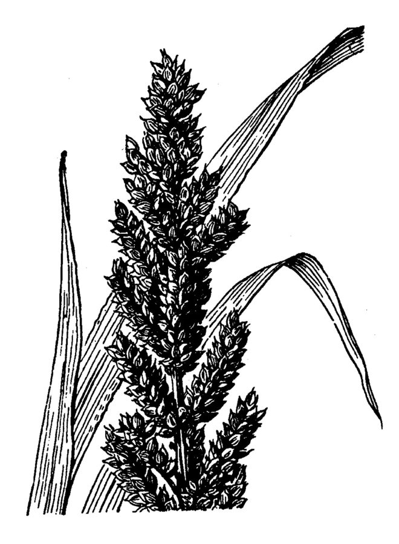

साँवाBarnyard Millet
Echinochloa frumentacea · Poaceae · FLR-0285

- Scientific name वैज्ञानिक नाम
- Echinochloa frumentacea (Roxb.) Link
- Family कुल
- Poaceae
- Hindi हिंदी
- साँवा
- Local names स्थानीय नाम
- sanwa, sawan, sama, barnyard millet
- Status here यहाँ की स्थिति
- cultivated
- Movement आवागमन
- Resident, here all year
- Known from कहाँ दर्ज
- Others have published records from the wider Awadh–Purvanchal plain, none yet from Basti–Ayodhya अवध–पूर्वांचल से दूसरों के प्रकाशित अभिलेख, बस्ती–अयोध्या से अभी नहीं
- IUCN IUCN
- not evaluated
- Review समीक्षा
- audited and independently read
When to look कब देखें
Expected mainly in July, August, September, October, November. मुख्यतः जुलाई, अगस्त, सितंबर, अक्टूबर, नवंबर में अपेक्षित।
Uses and possibilities उपयोग और संभावनाएँ
Drawn from the documented uses in the profile below, where each is labelled traditional, current or a research lead. All uses →
Tell it apart from इनसे अलग पहचानें
साँवा / Barnyard Millet
Echinochloa frumentacea (Roxb.) Link — Poaceae
साँवा — बरसात की एक छोटी मिलेट फसल जो जुलाई से सितंबर तक उगती है। साँवा की बाली मोटी और सुनहरी होती है। यह धान के खेतों में या नमी वाली ज़मीन पर अच्छी उपज देता है। दाना पोषक होता है और इसका इस्तेमाल खिचड़ी, दलिया और पूरी बनाने में होता है। पशु भी इसके चारे को खूब खाते हैं। यह फसल अधिक देखभाल के बिना उग जाती है।
Quick Identification त्वरित पहचान
| Feature | Description |
|---|---|
| Form | Annual grass, 60–100 cm, erect, coarse texture, robust tillers |
| Leaves | Linear, 20–40 cm, broad, 8–15 mm wide, blue-green color |
| Inflorescence | Compact panicle, 10–15 cm, dense, bristly, yellow-golden when mature |
| Spikelets | Clustered on short branches, each with stiff downward-pointing hairs (bristles) |
| Grain | Small, oval, 2–3 mm, reddish-brown or yellowish, with adhering husks |
| Roots | Fibrous, shallow to medium |
Field tip: A coarse-textured monsoon grass with wide blue-green leaves and a thick, golden, bristly seed head. Taller and coarser than finger millet. Grows July to November in wet-season fields and low-lying areas.
हिंदी — कैसे पहचानें: मोटी, नीली पत्तियाँ, सुनहरी, घनी, खुरदुरी बाली। ज़मीन में नमी हो तो अच्छा लगता है।
Morphology आकारिकी
Biometrics (typical measurements for barnyard millet in eastern India):
| Measurement | Range |
|---|---|
| Plant height | 60–100 cm |
| Leaf length | 20–40 cm |
| Leaf width | 8–15 mm |
| Panicle length | 10–15 cm |
| Grain length | 2–3 mm |
Stems: Stout, erect, often with 5–7 leaves, hollow between nodes, bearing tillers that are robust and wide-spreading.
Leaves: Linear, broadly lanceolate, parallel-veined, with a prominent midrib. Color is blue-green. Margins are entire and sometimes finely hairy.
Inflorescence: A dense panicle with short branches bearing spikelets. Bristles are stiff and point downward, giving the panicle a characteristic "bristly" texture.
Grain: Small caryopsis, oval, 2–3 mm long, pale yellow, reddish, or brown, with a persistent lemma and palea (husks).
हिंदी: मोटी, नीली पत्ती; बाली घनी, खुरदुरी, सुनहरी। दाना छोटा, गोलाकार।
Behaviour & Ecology व्यवहार और पारिस्थितिकी
A warm-season millet of Southeast Asian origin, cultivated as a monsoon crop in areas with high humidity and standing water. Echinochloa frumentacea is tolerant of waterlogging and thrives in low-lying fields where wheat and rice cannot be grown. It germinates rapidly in July rains and grows vigorously through the monsoon, flowering in September–October. The plant is drought-tolerant once established and produces grain in 90–100 days. It is less attacked by pests than rice or wheat and requires minimal external inputs, making it a low-cost crop for marginal lands. The grain is relished by birds, and the straw is excellent fodder.
हिंदी: पानी वाली ज़मीन पर उगता है। जुलाई की बारिश में तेज़ी से बढ़ता है। 90-100 दिनों में दाना तैयार हो जाता है। कीट कम लगते हैं।
Life Cycle / Phenology जीवन चक्र
| Month / Season | Event |
|---|---|
| June | Field preparation in wet conditions |
| July–August | Sowing of grains; germination and seedling emergence |
| August–September | Vegetative growth, tillering, and leaf expansion |
| September–October | Flowering and grain development |
| October–November | Grain maturation and physiological ripeness; harvest readiness |
Total duration: 90–100 days from sowing to harvest maturity.
हिंदी: जुलाई-अगस्त में बीज, सितंबर-अक्टूबर में फूल, नवंबर में दाना तैयार।
Cultivation Calendar कृषि कैलेंडर
| Stage | Month(s) |
|---|---|
| Field preparation and bunding | June–July (ensure water retention) |
| Sowing | July–August (20–25 kg/hectare) |
| Vegetative growth and tillering | August–September |
| Flowering and grain set | September–October |
| Grain filling and maturation | October–November |
| Harvesting | November (when panicles turn golden) |
Barnyard millet is primarily a Kharif (monsoon) crop; occasionally grown in Rabi where irrigation is available in warm regions.
Associated Species / Interactions संबंधित प्रजातियाँ
- Wetland neighbors: Often intercropped with Paddy, arhar (pigeon pea), or Sesame in low-lying areas.
- Understory growth: Can be grown under the canopy of taller crops or tree canopies.
- Seed dispersal: Seeds taken by birds and small mammals; spillage from harvest spreads volunteers in next season.
- Fodder companions: Straw mixed with Chickpea straw for cattle and buffalo feeding.
Pests and Diseases कीट और रोग
- Stem borer caterpillars: Larvae tunnel into stems; damage is usually light on healthy plants.
- Leaf-hoppers: Occasional infestations; rarely cause economic damage.
- Fungal leaf spots: Alternaria and Bipolaris cause necrotic spots on leaves in humid conditions.
- Downy mildew: Systemic fungal disease on seedlings; less common.
- Storage pests: Sitophilus beetles infest stored grain; traditional storage in raised bins minimizes loss.
Agricultural / Human Relevance कृषि प्रासंगिकता
Grain uses: The grain is ground into flour for porridge (upma), made into khichdi with pulses, or made into puffed snacks. Whole grains are boiled as a side dish. The flour is sometimes mixed with wheat flour for bread-making.
Nutritional value: Barnyard millet is rich in dietary fiber, minerals (phosphorus, iron), and antioxidants. It is easier to digest than some other millets and is recommended for children and elderly people.
Fodder: Both green fodder and straw are nutritious for livestock. The crop is sometimes harvested green for cattle feed before grain maturity.
Cultivation advantages: Grows in waterlogged soils where rice cannot be grown or in marginal rainfed areas. Requires minimal fertilizer and pest management. Seeds are inexpensive and widely available. It is a traditional crop in UP villages, lending food security to poor farmers.
हिंदी: दलिया और खिचड़ी बनाते हैं। पशु को बहुत पसंद है। जल-भराव वाली ज़मीन पर उगता है। कम खर्च में अच्छी फसल देता है।
Expected Locally स्थानीय रूप से अपेक्षित
Not a field record. Written from published accounts for eastern Uttar Pradesh. No confirmed local sighting yet — if you have seen it, that is what the atlas needs.
अभी तक स्थानीय पुष्टि नहीं। यह विवरण प्रकाशित स्रोतों से है, किसी अवलोकन से नहीं।
Barnyard millet is to be expected in cultivated fields throughout Basti district, particularly in low-lying and waterlogged areas during the monsoon season (July to November). GBIF holds published records from the wider Awadh–Purvanchal plain. The crop is grown as a traditional minor cereal in homestead gardens and marginal fields.
Distribution वितरण
Global range: Native to tropical Asia; now cultivated in India, Southeast Asia, East Asia, and parts of Africa.
In India: Widely cultivated in monsoon regions, particularly eastern and central India.
In Uttar Pradesh: Grown as a minor cereal in all districts with high monsoon rainfall, particularly in eastern UP.
In Basti district / eastern UP: A traditional monsoon cereal in low-lying villages and wetland margins.
Research Questions शोध प्रश्न
Anyone can investigate these | कोई भी इन प्रश्नों की जाँच कर सकता है
- How does barnyard millet yield compare to rice when grown in the same waterlogged field? — Measure harvest from matched plots.
- Which birds eat barnyard millet grain before harvest, and how much damage do they cause? / कौन से पक्षी साँवे का दाना खाते हैं? — Observe ripening fields; count pecked grain.
- Can barnyard millet straw be made into rope or cordage, as is done with rice straw? / क्या साँवे की भूसी से रस्सी बनाई जा सकती है?
- How does the taste and digestibility of barnyard millet porridge compare to finger millet (ragi) porridge? — Cook both and compare flavor and texture.
- What is the soil moisture level at which barnyard millet does best, and does it survive complete submersion? — Measure moisture in producing vs. non-producing fields.
Similar Species मिलती-जुलती प्रजातियाँ
| Species | How to tell apart | हिंदी | |
|---|---|---|---|
| [[finger_millet\ | Finger Millet]] (Eleusine coracana) | Smaller plant (30–90 cm); seed head has finger-like spikes; grain tiny (1 mm); reddish varieties | रागी — छोटा पौधा, उँगली जैसी बालियाँ; छोटा दाना |
| Paddy (Oryza sativa) | Taller (90–150 cm), more delicate; panicle drooping; grain larger (6–8 mm) | चावल — लंबा, नाज़ुक; बाली झूलती है; दाना बड़ा | |
| Jungle rice (Echinochloa crus-galli) | Similar but smaller panicles; grain even smaller; considered a weed | जंगली साँवा — छोटी बाली; ऊसर में उगता है |
Field rule: A robust monsoon grass with broad blue-green leaves, a thick golden bristly seed head, and small oval grain; grows in wet fields July to November.
Taxonomy & Classification वर्गीकरण
Original description. Originally described by William Roxburgh as Panicum frumentaceum in 1832 in Flora Indica. Later transferred to Echinochloa by Friedrich Link in 1841. The genus name Echinochloa is from Greek echinos (hedgehog) and chloe (grass), referring to the bristly panicles.
Subspecies. Monotypic — no subspecies are currently recognised.
Family and order placement. Poaceae, order Poales. Closely related to barnyard grass (E. crus-galli) and other Echinochloa species.
Phylogenetic notes. Echinochloa frumentacea is thought to have been selected from wild E. crus-galli through cultivation. Molecular phylogeny groups it within the Echinochloa genus alongside other Echinochloa species.
IUCN status rationale. Not evaluated. Cultivated crop; widespread distribution ensures no conservation concern.
Photo Gallery फोटो गैलरी
Photos needed आवश्यक फोटो
- [ ] Whole plant showing broad leaves and tillers (पूरा पौधा)
- [ ] Panicle at flowering (बाली)
- [ ] Harvested grain drying (सूखा दाना)
No photos yet — add field photos to media/species/barnyard_millet/ and run node scripts/sync_photos.js.
References संदर्भ
- Roxburgh, W. (1832). Flora Indica. Serampore: Mission Press.
- Link, F. (1841). Hortus Regius Berolinensis, Vol. 1. G. Reimer, Berlin.
- Hooker, J.D. (1889). Flora of British India, Vol. 7. L. Reeve & Co., London.
- Duthie, J.F. (1903). Flora of the Upper Gangetic Plain and of the Adjacent Siwalik and Sub-Himalayan Tracts, Vol. 2. Government Printing, Calcutta.
- Indian Council of Agricultural Research (2021). Handbook of Agriculture. ICAR, New Delhi.
- GBIF Occurrence Data — Echinochloa frumentacea, India (2020–2026).
Source file: species/flora/crops/barnyard_millet.md